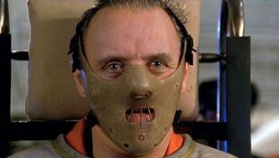
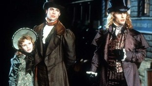
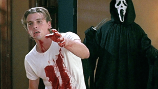

After the slasher-saturated 1980s, the 1990s saw horror cinema evolve in new directions. The genre became more self-aware, psychological thrillers gained critical acclaim, and emerging digital technologies began to hint at fresh ways to tell terrifying stories. Audiences, now familiar with horror tropes, were ready for films that played with their expectations.
The 1990s was a dynamic period for horror. It shifted away from the straightforward slashers of the previous decade, embracing more nuanced psychological depth, as seen in critically acclaimed thrillers. Gothic horror saw a resurgence with lavish adaptations. Crucially, the latter half of the decade saw the rise of meta-horror, which deconstructed genre conventions, and the emergence of the found footage technique, which would revolutionize low-budget horror filmmaking and blur the lines between reality and fiction for a new generation.
This psychological thriller swept the major Academy Awards, a rare feat for a film with such strong horror elements. The chilling dynamic between FBI trainee Clarice Starling and the brilliant, cannibalistic psychiatrist Hannibal Lecter redefined the "profiler vs. serial killer" narrative. It elevated the genre by focusing on intelligent dialogue, character psychology, and suspense over explicit gore, proving horror could be both terrifying and prestigious, significantly impacting the perception and evolution of thriller-horror hybrids.
Anne Rice's lush vampire saga was brought to the screen with an all-star cast, marking a return to more romantic and philosophical gothic horror. It explored themes of immortality, loneliness, and morality from the vampires' perspectives, offering a sympathetic and complex view of these classic monsters. This film contributed to a renewed interest in vampires as tragic, rather than purely villainous, figures, influencing a wave of gothic and paranormal romance in subsequent years.
Wes Craven masterfully revitalized the slasher genre with this clever, self-aware horror film. Its characters knew the "rules" of horror movies, and the film deconstructed tropes while still delivering genuine suspense and brutal scares from the iconic Ghostface killer. "Scream" made horror "cool" again for a new generation and sparked a resurgence of teen-centric slashers that played with genre conventions, demonstrating horror's ability to reinvent itself through meta-commentary.
This independent film became a cultural phenomenon, popularizing the found-footage technique for a mainstream audience. Marketed through a groundbreaking internet campaign that blurred fiction and reality, its raw, shaky camera work and improvised performances created an unsettling sense of realism. By leaving much of the terror to the audience's imagination, it proved that low-budget horror could be incredibly effective and paved the way for a new wave of accessible, first-person perspective horror filmmaking in the 2000s.

The 1990s was a decade of transition and innovation for horror. It saw the genre mature with critically acclaimed psychological thrillers, playfully deconstruct itself with meta-slashers, and find entirely new, immersive modes of storytelling like found footage. These developments set the stage for the diverse and often technologically-influenced horror landscape of the 21st century.
| Nombre | ID | Carrera | Correo |
|---|---|---|---|
| Maria Jose Arévalo | 1094044725 | Jurisprudencia | mariaj.arevalo@urosario.edu.co |
| Daniela Cortes Rodriguez | 1095550727 | Jurisprudencia | daniela.cortesro@urosario.edu.co |